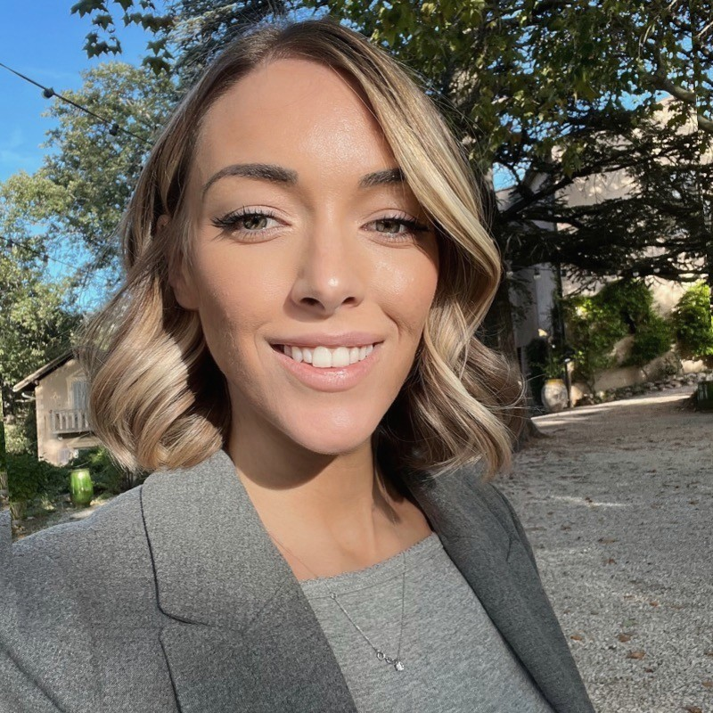

Studio Madame-L · Aix-en-Provence
Marketing consultant.
Fractional CMO.
Brand activation.
Lucie Ramon supports brands, venues and talents from Aix-en-Provence, from strategy through execution.
Local base
Senior marketing direction based in Aix-en-Provence.
Support
Structure the brand, accelerate decisions and make the project visible.
Studio Madame-L supports businesses that need a clear marketing vision and experienced leadership without immediately expanding their permanent organisation.
Fractional CMO
Audit, priorities, positioning, roadmap, budget, team coordination and performance monitoring.
Brand strategy
Brand platform, storytelling, offer architecture, image, customer experience and consistent communication.
Activation & influence
Campaigns, talents, partnerships, events and formats designed to create visibility and engagement.

Lucie Ramon
One senior partner connecting strategy, network and field execution.
Based in Aix-en-Provence, Lucie particularly supports lifestyle, hospitality, premium and experience-led projects. Her approach connects positioning, partnership opportunities and operational reality so projects move forward without losing what makes them distinctive.
Discover her backgroundLocal questions
Working with a marketing consultant in Aix-en-Provence.
Assignments can be delivered in Aix, Marseille, Provence or remotely, with on-site work and production whenever the project requires it.
Why work with a fractional CMO in Aix-en-Provence?
To access senior marketing leadership, clarify priorities and lead execution without immediately hiring a full-time executive.
Does Studio Madame-L work in Aix-en-Provence and Marseille?
Yes. Lucie is based in Aix and supports projects in Aix, Marseille, Provence and throughout France.
What businesses does Lucie Ramon support?
Lifestyle and premium brands, venues, hospitality, talents and businesses preparing a launch, repositioning or visibility milestone.
Can the assignment combine strategy and execution?
Yes: strategy, activation, influence, partnerships, events and specialist coordination can form one integrated assignment.
Contact in Aix-en-Provence